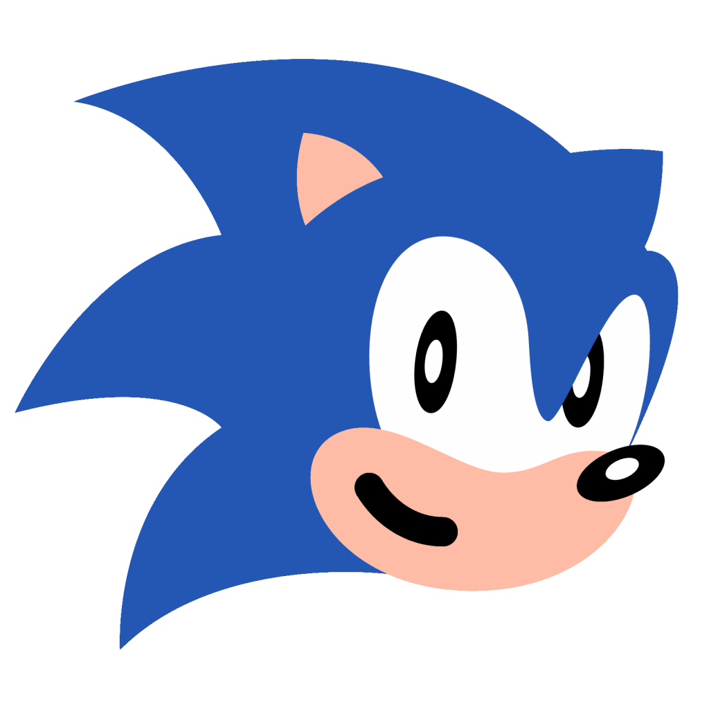
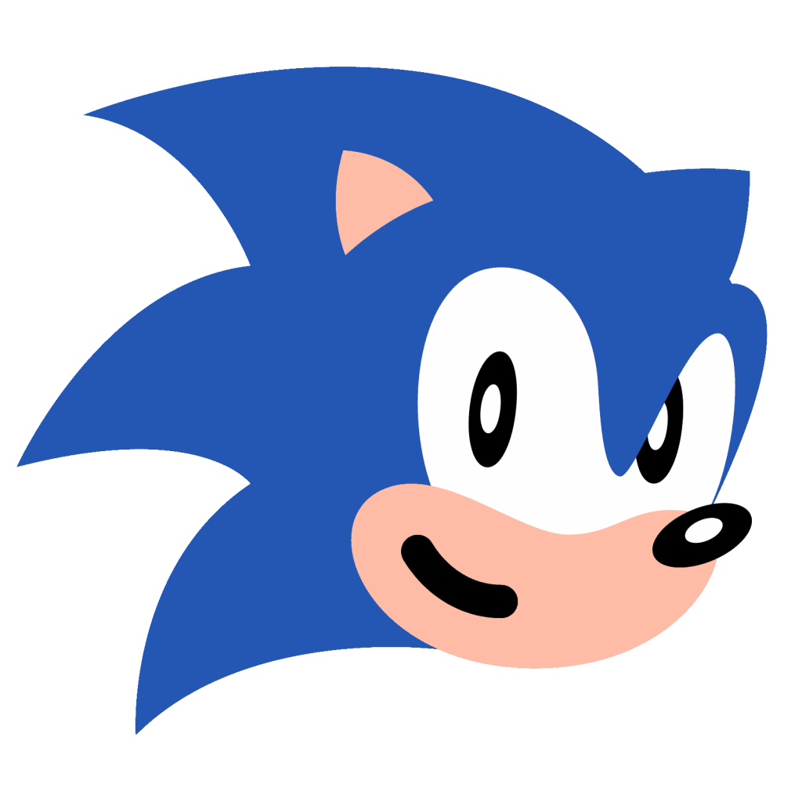

Since 1991 he make us more happier ;). Sonic came out in the first game and make a huge sucess until nowdays! The first Sonic game, Sonic the Hedgehog, is a platform game released in 1991.[3] Players control the anthropomorphic blue hedgehog Sonic, who can run and jump at high speeds using springs, ramps, and loops.[4] Sonic must stop Dr. Robotnik from taking over the world using the Chaos Emeralds.[4] Sonic the Hedgehog 2 (1992)[5] increased the overall size and speed of the series' gameplay[6] and was the second best-selling Genesis game.[7] It introduced Sonic's sidekick and best friend, Miles "Tails" Prower, who followed Sonic throughout the game, and allowed a second player to control him in a limited fashion.[6] This game also introduced Sonic's "spin dash" maneuver, an ability which allows Sonic to burst forwards quickly from a complete standstill, unlike the previous game, where Sonic could only gain speed with momentum.[6] Sonic 2 was followed in 1993 by an arcade game, SegaSonic the Hedgehog, featuring new characters Mighty the Armadillo and Ray the Flying Squirrel. The next console game, Sonic the Hedgehog 3, was released in 1994.[9] The game introduced a temporary shield maneuver, often called the "insta-shield",[10] added new shield types to the series,[11] and allowed Tails to be completely playable under a second player's control, as well as adding the option for players to utilize Tails' flying ability in levels.[11] It also introduced the character, Knuckles the Echidna, who served as an additional antagonist with Doctor Robotnik for the game.[11] Sonic & Knuckles, another platform game in the Sonic series, was released later in 1994.[12] The game featured Knuckles as a playable character with gliding and wall climbing abilities[12] and allowed gamers to plug in Sonic the Hedgehog 3 to the top of the Sonic and Knuckles cartridge as part of the game's "lock on" functionality. This allowed gamers to play the game as it was originally intended;[12] the games were intended to be one game, but were split due to cartridge space and time constraints.[13][14] There were several Sonic games for the Genesis that were not 2D platform games. Sonic Spinball, released in 1993, was a pinball simulation modeled after the Spring Yard and Casino Night Zones from the first two Sonic games.[15] The game, unlike general pinball simulations, had an overall goal of collecting all the Chaos Emeralds in each level and defeating the levels' bosses.[15] It was one of the few video games that had elements from the cartoons Sonic the Hedgehog and Adventures of Sonic the Hedgehog. Dr. Robotnik's Mean Bean Machine was a puzzle game similar to Puyo Puyo[16] that was set in the Adventures of Sonic the Hedgehog universe. Sonic 3D Blast, an isometric, 2.5D platform game[17] released in 1996 and developed by Traveller's Tales,[18] featured Sonic running through pseudo-3D environments while trying to rescue Flickies from Doctor Robotnik.[17] The Sega Genesis had "add-on" systems that incorporated Sonic games. Sonic CD, released for the Sega CD, was a 2D platform game[19] released in 1993.[20] The game introduced the characters Amy Rose[21] and Metal Sonic and featured levels that differed depending upon whether Sonic was in the past, present, or future time frames.[19] Knuckles' Chaotix, a spin-off released in 1995 for the Sega 32X,[22] featured Knuckles and a new group named Chaotix fighting against Dr. Robotnik.[23] The game featured a two-player cooperative system in which the on-screen characters were connected by magic rings.[23] There was also Sonic Eraser, a puzzle game released exclusively on Sega Game Toshokan in 1991. Due to the success of Sonic games on the Sega Genesis, the series was introduced to the Master System and the Game Gear. Sega began by releasing Sonic the Hedgehog, a 2D platform game, in 1991.[24] The game featured Sonic's ability to run and to jump at high speeds like its Mega Drive/Genesis counterpart but with notably different level design and music.[25] Sega later released Sonic the Hedgehog 2, another 2D platform game, in 1992. The game differed from its Genesis counterpart with different levels and music and by not including a "spin dash" maneuver. It also featured a different storyline in which Doctor Robotnik kidnaps Tails, who is non-playable in the Master System/Game Gear version.[26] Sonic Chaos/Sonic and Tails (Japan), released in 1993,[27] was similar to the earlier two Sega Master System/Game Gear Sonic games, but featured Tails as a playable character.[28] A sequel, Sonic Triple Trouble/Sonic and Tails 2 (Japan), a 2D platform game, was released in 1994[29] for the Game Gear and introduced a new character, Nack the Weasel, who, along with Knuckles and Doctor Robotnik, raced to collect the Chaos Emeralds. One of the last games for the Sega Game Gear, Sonic Blast, was released in 1996[30] and featured prerendered sprites. Several spin-off Sonic games that were not 2D platform games were also released. Sonic Labyrinth, released for Game Gear in 1995,[31] featured an isometric view and slower exploration-based gameplay that resulted from Robotnik's replacing Sonic's shoes with "Speed Down Boots." Sonic Drift was a kart racer released in 1994.[32] It later had a sequel, Sonic Drift 2, which was released in 1995.[33] Tails also received two spin-offs. Tails' Skypatrol, released in 1995,[34] allowed players to control an always-flying Tails. Tails Adventure, released in 1995,[35] featured a mix of platforming and RPG elements.
 
